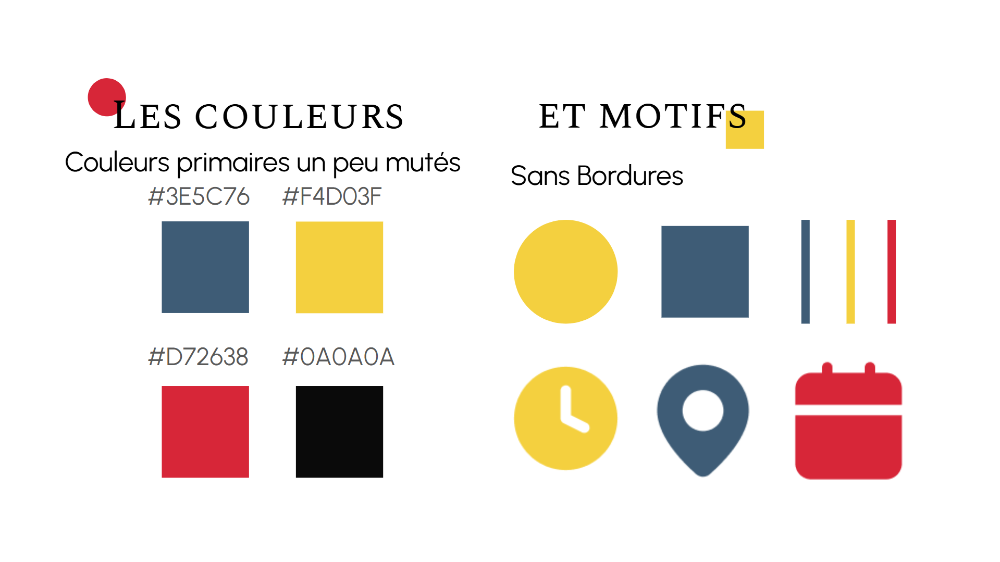
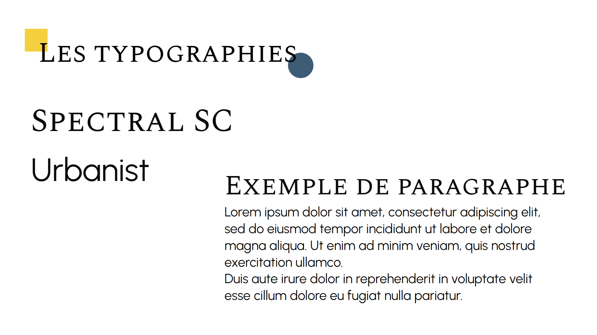
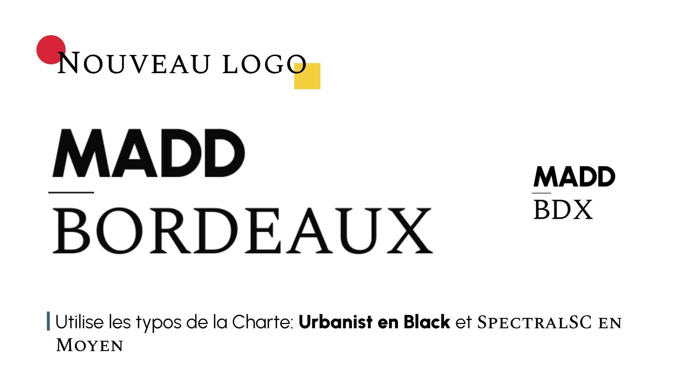
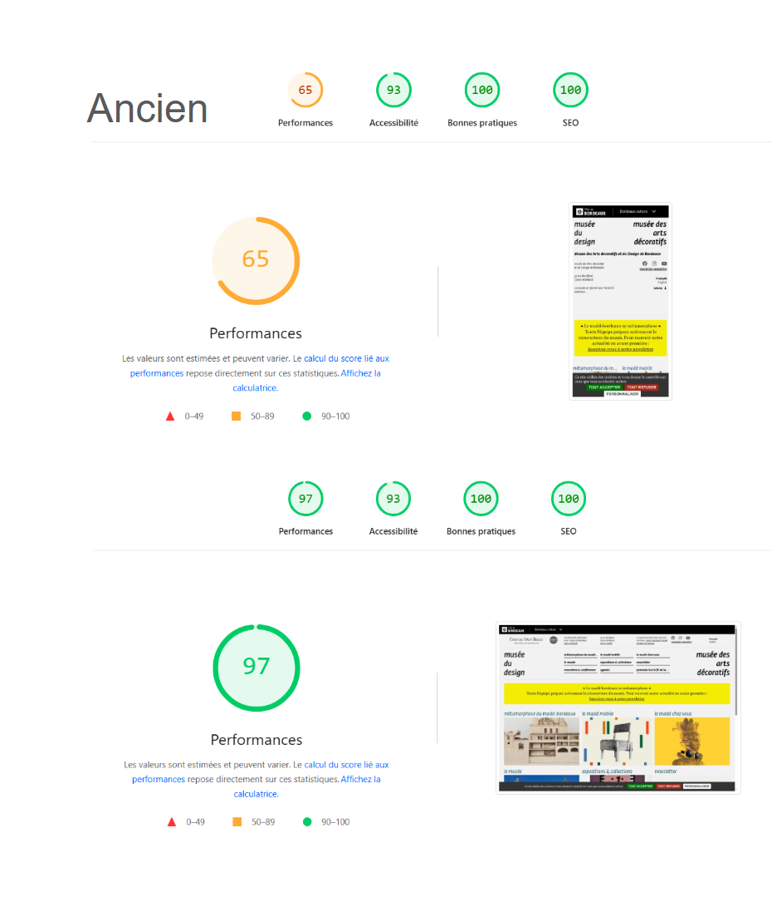
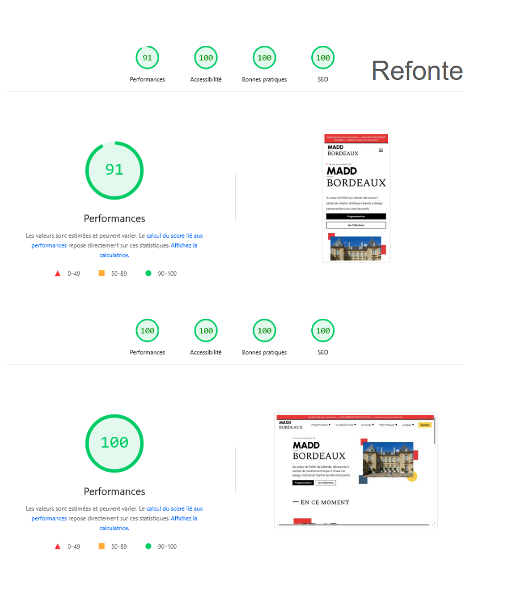

Refonte de Site Web - Le MADD ✦
Refonte d'un site de musée centré sur la réalisation d'un site accessible et éco-resonsable
Description du Projet
Le projet de refonte du site du MADD (Musée des Arts Décoratifs et du Design) s'est déroulé sur deux semaines, avec pour objectif de moderniser l'apparence du site tout en améliorant son accessibilité et en adoptant une approche éco-responsable. En tant que groupe de quatre étudiants, nous avons travaillé ensemble pour créer une nouvelle interface qui reflète l'identité du musée tout en offrant une expérience utilisateur optimale. L'objectif était de designer et réaliser deux pages du site: la page d'acceuil et une de présentation (ici, la page Histoire du MADD).
Méthodologie
La première semaine a été consacrée à la recherche et à la planification. Nous avons analysé le site existant pour identifier les points faibles en termes de design, d'accessibilité et de performance, ainsi que sa cible pour adapter notre approche. Nous avons également étudié les meilleures pratiques en matière de design web éco-responsable pour guider notre refonte. Une nouvelle identité visuelle a été définie, reflétant l'essence du MADD et s'inspirant de l'art Bauhaus. Ensuite, nous avons esquissé des wireframes et des maquettes sur Figma pour la nouvelle interface, en mettant l'accent sur une navigation intuitive et une présentation claire des collections du musée. Nous avons également intégré des éléments de design inspirés de l'esthétique du MADD pour renforcer l'identité visuelle du site.
La deuxième semaine a été dédiée à la réalisation technique du site. Nous avons utilisé HTML et CSS pour construire la nouvelle interface, en veillant à respecter les normes d'accessibilité et à optimiser les performances pour réduire l'empreinte carbone du site, tout en gardant le site responsive.
La page d'aceuil a été conçue pour offrir une vue d'ensemble et facile à lire des collections du musée, avec des sections appelant à découvrir les expositions en cours, les événements à venir et l'histoire du MADD. La hero section à été pensée pour rassemblé les informations les plus importantes, et pour retrouver facilement les informations complémentaires.
La page de présentation, la page histoire, à été travaillée pour offrir une expérience de lecture agréable, avec une hiérarchie claire des informations. Nous avons également veillé à ce que le site soit facilement navigable, avec des liens clairs vers les différentes sections du site et une structure de navigation intuitive. Cette page unique reprend les textes de plusieurs articles du site actuel, en les réorganisant pour offrir une lecture plus fluide et agréable, tout en intégrant des éléments visuels pour illustrer les différentes périodes de l'histoire du musée.
La conception visuelle et le maquettage
La première étape du projet a consisté à concevoir l'identité visuelle du site, en s'inspirant de l'esthétique du mouvement Bauhaus. Nous avons créé des maquettes sur Figma pour tester différentes approches de design avant de passer à la réalisation technique.




Le site en ligne et ses performances
Le site a été déployé en ligne et a montré de significatives améliorations en termes de performance et d'accessibilité par rapport au site original.


Les Résultats & Impact
Le site n'a pas été transmit au musée, mais nous avons reçu des retours positifs de la part de nos enseignants, soulignant l'amélioration significative de l'esthétique, de l'accessibilité et de la performance du site. Les choix visuels, et le choix du mouvement Bauhaus pour l'identité visuelle ont été particulièrement appréciés, tout comme l'effort pour rendre le site plus éco-responsable. Ce projet nous a permis de développer nos compétences en design web, en accessibilité et en développement durable.